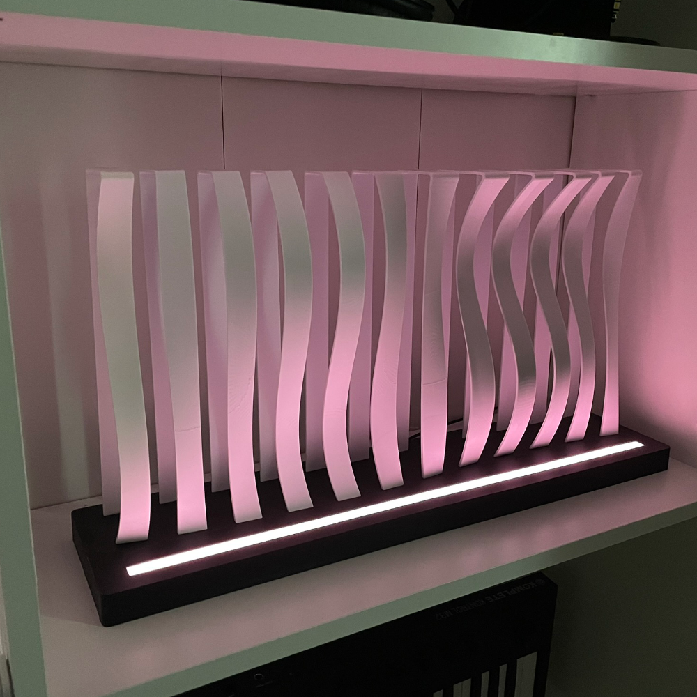
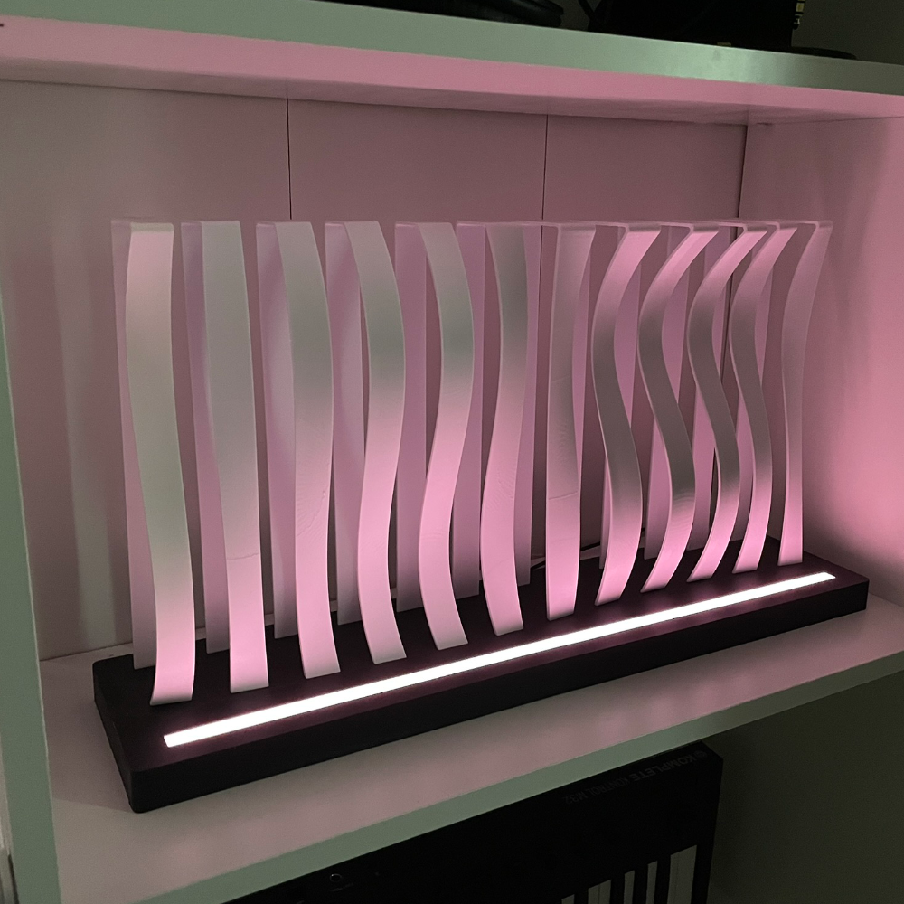

Våglampa
Efter jag hade gjort vågen ville jag se hur den hade blivit om man hade belyst den underifrån
Slutade med att jag designade denna grejen utifrån de konceptet
 

Hur den gjordes
Har tyvärr inga fina bilder från bygget av denna
Modellen för vågmönstret är en liten modifierad version av den till vågen
Gjorde sedan så att det bara är de yttre väggarna som finns kvar för att få en liten annan effekt
Undre delen är utskriver i några delar och sedan limmade, slipade och målade för att få en fin yta
I botten sitter det en list med ws2812b lampor och en wemos d1 med wled för att kontrollera lamporna
För att sprida ljuset gjorde jag en en tunn remsa i vit plast
Vågorna sitter i slots så de bara klickar i lite lätt men det är inget som klarar av att springa runt o leka med, borde nog limma fast de